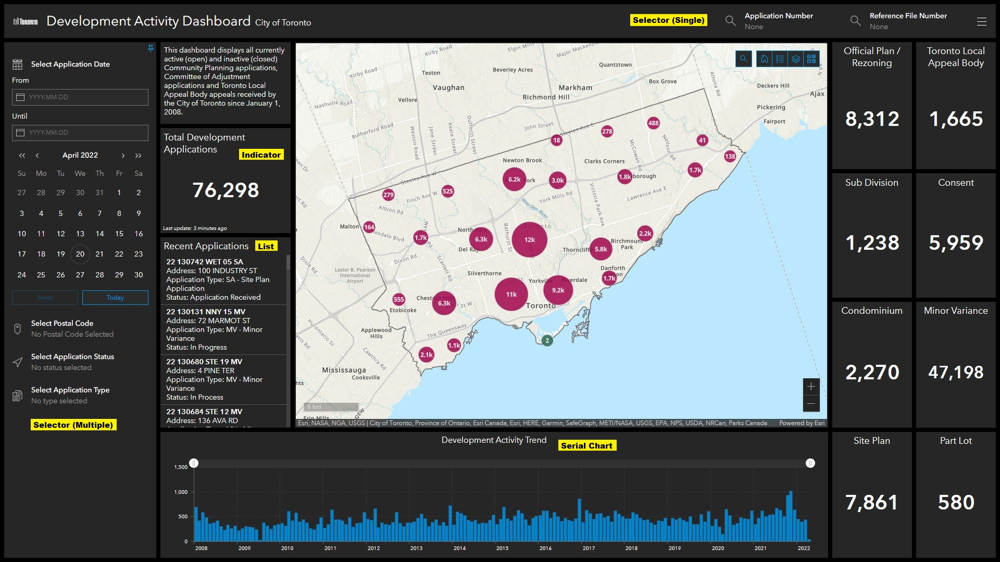

Methodology
After retrieving the development applications data from the City of Toronto Open Data Portal, the coordinates were transformed from the original MTM zone 10 projection to UTM zone 17N ground coordinates, using the X Y Table to Point geoprocessing tool in ArcGIS Pro. From this geocoded data, the applications were symbolised according to application type and the layers published to ArcGIS online (AGOL) to create a web map. This web map was the base from which the Dashboard and Experience Builder were created.
The dashboard displays the statistical trends of the development applications, and the Experience Builder enhances the cartographic visualisation to give the user a more interactive experience. A story map was also created to show the development application process, so the user can better understand the statistics and other information illustrated by these tools and applications.
All tools and applications used are further documented, giving a step-by-step guide into the whole process from conceptualization stage to completion. All achievements and other outcomes are also documented.
ArcGIS Dashboards
To create an interactive dashboard and convey useful statistics to the users efficiently, several elements were utilized besides the embedded web map.
• Indicator displays the count of the applications in Toronto, or the count of the specific application type in the current map extent.
• List shows the recent applications that were submitted this month. The users can zoom the map to the corresponding application location by clicking on the specific application, and the corresponding pop-up will be displayed automatically as well.
• Serial Chart visualizes the monthly application volume since 2008 to show the development trend in Toronto. Its scroll bar allows the users to display the application volume in the specific date range.
• Selector (Single) in the header allows the users to select the specific application based on the application number or the reference file number. Once the application is selected, the users can zoom the map to the corresponding application location, and the corresponding pop-up will be displayed automatically as well.
• Selector (Multiple) in the collapsed sidebar allows the users to filter the applications based on the submission date range, postal code, application status, or application type. Only the applications that satisfy the search criteria will be displayed on the map.
